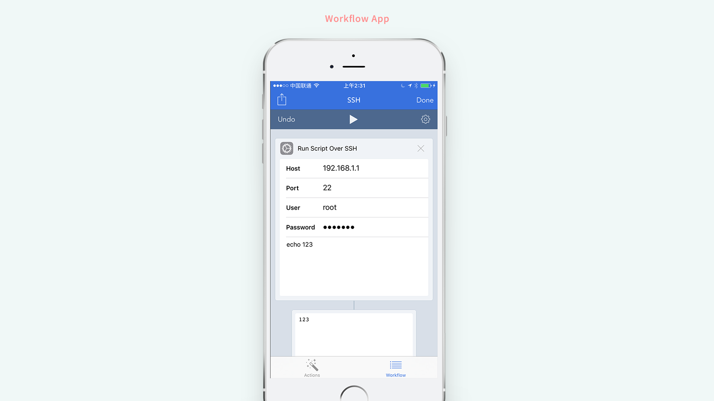
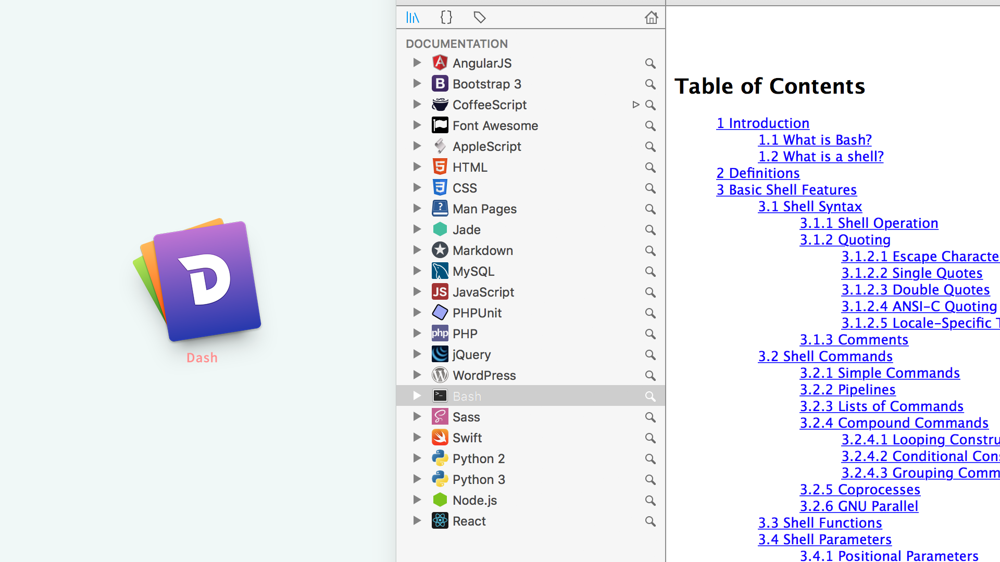
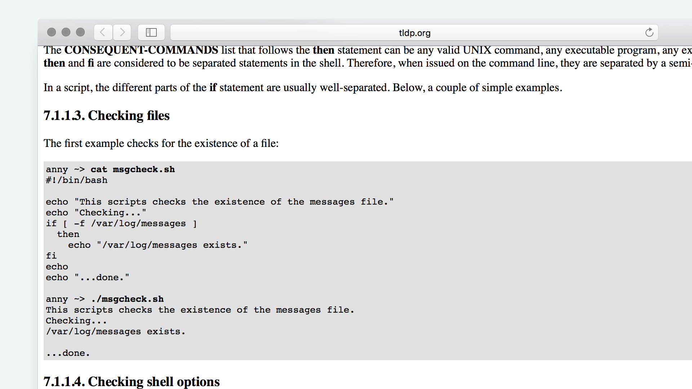
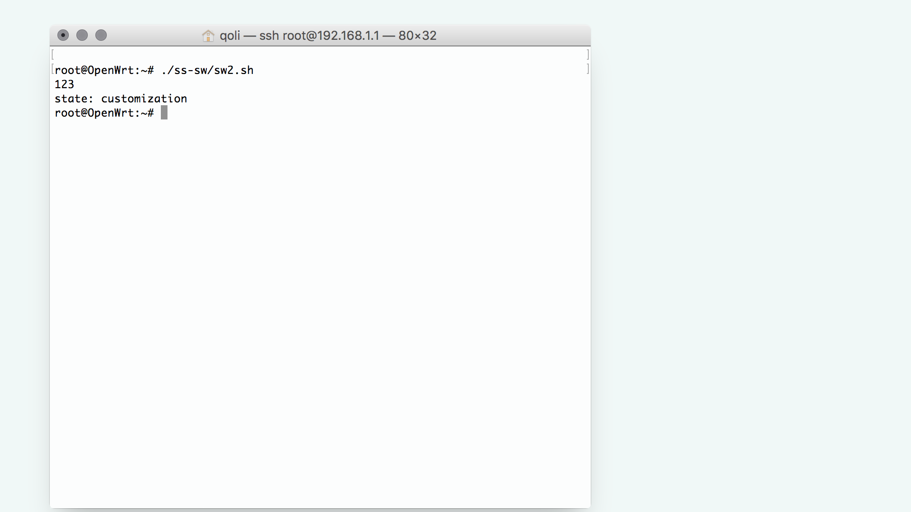
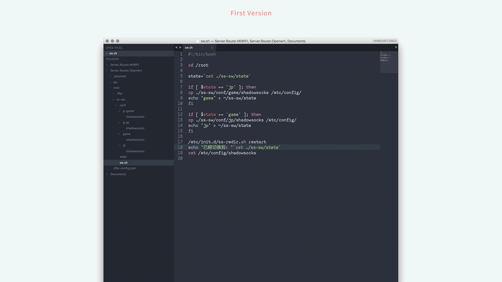
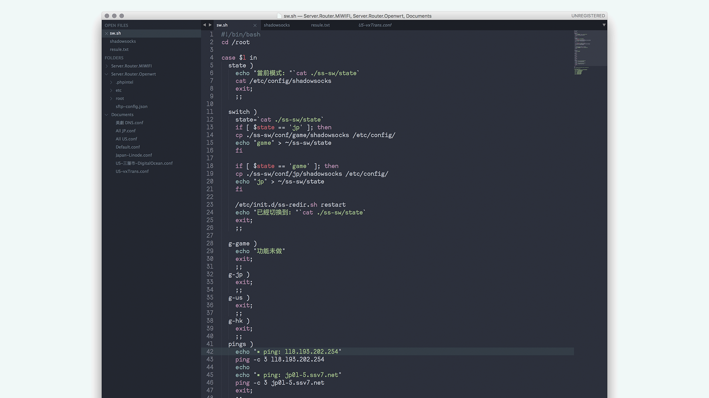
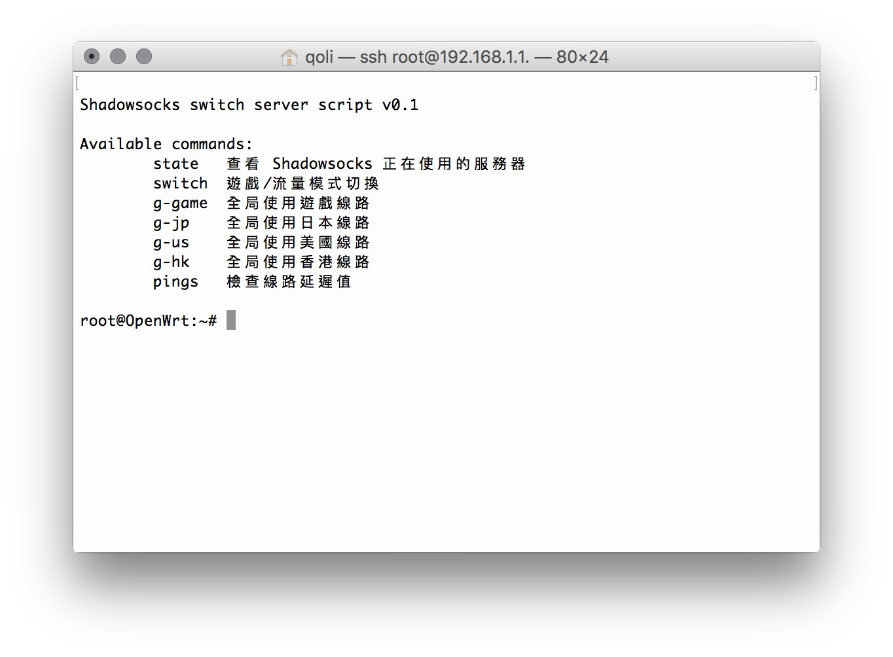

作為設計師的我，偶然會有一些軟體上的使用便利要求。
我的家中是使用極路由改 OpenWrt 路由器 OS，用起來還挺方便，搭配了 SS 作為自由訪問網絡的利器。
最近，對這個路由器有了一個新的需求。
* 希望把 PS4 的遊戲（全境封鎖）加速一下
* 但是怎麼根據不同域名使用不同的加速 SS？
* 其實也能接受手動切換
這是因為我在使用的 SS 供應商其實是一個銷售遊戲加速 SS 的。有三分之一的線路是不允許大流量操作的。同時間，往往那些只允許網頁\遊戲操作的線路往往延遲也比較低。 OpenWrt 的 WebUI 切換起來也麻煩，每次都要複製粘貼。
我和一個在編程領域方面挺厲害的人，說了幾句，說了一下我想做這個事情。回了家，我就進行了編碼了。
一般而言，寫代碼第一步是，思考一下怎麼操作起來方便。
1. 我希望這個腳本使用起來方便；
2. 我不用老是複製粘貼；
3. 我也就只有日本線路和遊戲線路的切換要求而已。
接著，要進行可用性探索。我先留意了一下 Workflow App，這是一個號稱便利操作的 App。
我注意到裡面內置了「Run Script Over SSH」這個功能。我測試了一下，覺得能 Work！

在 Workflow 顯示出來了 Terminal 回顯的訊息，太棒了！
所以，我就決定了這個腳本使用 Bash 腳本來寫吧。但是我還沒寫過 Bash 哦。
還有，Bash 這個終端腳又不像 PHP 那樣能保存 Session 或者寫數據庫，那麼，狀態怎麼保存呢？在琢磨著這個問題，我就決定要建立一個狀態檔案，來專門記錄切換的記錄吧。
現在只需要先 cat（在終端讀取文件內容的命令）一下這個檔案，隨後就根據狀態檔案進行走另一個線路就搞定了。
編程的思路弄清楚，一切就可以開始了。
我在摸索著不懂寫的情況下。寫了第一個能用的版本。期間，我連怎麼在 Bash 怎麼寫 if 都不知道。我查了一下手冊。
推薦：Dash，一個很好用的本地手冊程式。

看了 Bash 的 IF 文檔，有一大堆看不懂一樣的英文。沒關係，以為直接看例子就好了。
if
The syntax of the if command is:
if test-commands; then
consequent-commands;
[elif more-test-commands; then
more-consequents;]
[else alternate-consequents;]
fi
The test-commands list is executed, and if its return status is zero, the consequent-commands list is executed. If test-commands returns a non-zero status, each elif list is executed in turn, and if its exit status is zero, the corresponding more-consequents is executed and the command completes. If ‘else alternate-consequents’ is present, and the final command in the final if or elif clause has a non-zero exit status, then alternate-consequents is executed. The return status is the exit status of the last command executed, or zero if no condition tested true.
我也不知道他們說什麼啊。就 Google 了。在 Google 第一個 Link 中，終於有我能直接看懂的例子了。

oh，原來 if 要這樣寫哦，先寫一個測試一下吧。
#!/bin/bash
state=`cat ./ss-sw/state`
if [ $state == 'customization' ]; then
echo 123
fi
echo "state: "$state

太棒了。說明這個寫法是對的。
我繼續來豐富一下這個腳本哦。

我先在路由器下的 SSH 測試了一下，能 Work。那麼，我就要把他封裝在手機運行了。
接著，這個第一個能用的版本，就算完成了。
任何代碼都逃不出這個要求。這個簡單的切換腳本越來越不能滿足我的要求。我又新添加了如下需求：
1. 現在我在使用的遊戲線路是不是很快呢？
2. 我手上還有香港線路、國內中轉加速的美國線路這些怎麼辦？
3. 有些時候我忘記了我在用哪個線路。
4. 有些時候我要用全局代理。
根據這些需求，我不見得都能滿足自己。同時間，原來版本的代碼太過簡陋，加功能就要重構了。
所以，第三步，代碼重構就開始了。
那麼問題來了，Bash 支持 switch 的寫法嗎？我又 Google 了一下，在文檔中找到。
case
The syntax of the case command is:
case word in [ [(] pattern [| pattern]…) command-list ;;]… esac
case will selectively execute the command-list corresponding to the first pattern that matches word. If the shell option nocasematch (see the description of shopt in The Shopt Builtin) is enabled, the match is performed without regard to the case of alphabetic characters. The ‘|’ is used to separate multiple patterns, and the ‘)’ operator terminates a pattern list. A list of patterns and an associated command-list is known as a clause.
Each clause must be terminated with ‘;;’, ‘;&’, or ‘;;&’. The word undergoes tilde expansion, parameter expansion, command substitution, arithmetic expansion, and quote removal before matching is attempted. Each pattern undergoes tilde expansion, parameter expansion, command substitution, and arithmetic expansion.
There may be an arbitrary number of case clauses, each terminated by a ‘;;’, ‘;&’, or ‘;;&’. The first pattern that matches determines the command-list that is executed. It’s a common idiom to use ‘*’ as the final pattern to define the default case, since that pattern will always match.
Here is an example using case in a script that could be used to describe one interesting feature of an animal:
echo -n "Enter the name of an animal: "
read ANIMAL
echo -n "The $ANIMAL has "
case $ANIMAL in
horse | dog | cat) echo -n "four";;
man | kangaroo ) echo -n "two";;
*) echo -n "an unknown number of";;
esac
echo " legs."
If the ‘;;’ operator is used, no subsequent matches are attempted after the first pattern match. Using ‘;&’ in place of ‘;;’ causes execution to continue with the command-list associated with the next clause, if any. Using ‘;;&’ in place of ‘;;’ causes the shell to test the patterns in the next clause, if any, and execute any associated command-list on a successful match.
The return status is zero if no pattern is matched. Otherwise, the return status is the exit status of the command-list executed.
這段，只需要看中間例子的文檔。
oh，原來在 Bash 使用 case 這個關鍵字做 switch 的功能。看起來這個 |（豎線）還挺強大的，是 or（或）這個語法。
但是，這麼多功能，我還要傳入參數啊！怎麼在 .sh 裡面傳入參數呢？我也在 Google 裡找到了答案，是寫著「＄1,＄2,＄3...」這些叫就是第 N 個參數了。
於是乎，我就給這個腳本產生第一次，像樣的改進了。

順便，寫一個比較帥一點的 Terminal 的幫助文字。

看起來挺滿意的。
順便把封裝在 Workflow 的操作界面改進一下。
我覺得這一切帥死了。
接著，這個版本又停了一段時間。但是這份代碼，我沒有滿足需求 2（其他線路的使用）以及需求 4（全局代理的使用）。目前來說，這樣夠用了。
我對這個腳本又產生了新的需求。
1. 改 SS.conf 真的太煩了！！！
2. 我改服務器時候，有些服務器是 rc4-md5 加密，有些服務器是 ase 加密，這串英文字母複製粘貼起來好煩啊。
3. 有代碼沉餘的問題了。
我想了一下，Bash 有沒有 Function 的命令啊？它支持嗎？我再度為這個問題 Google 了一下。答案是，有的。
3.3 Shell Functions
Shell functions are a way to group commands for later execution using a single name for the group. They are executed just like a "regular" command. When the name of a shell function is used as a simple command name, the list of commands associated with that function name is executed. Shell functions are executed in the current shell context; no new process is created to interpret them.
Functions are declared using this syntax:
name () compound-command [ redirections ]
or
function name [()] compound-command [ redirections ]
This defines a shell function named name. The reserved word function is optional. If the function reserved word is supplied, the parentheses are optional. The body of the function is the compound command compound-command (see Compound Commands). That command is usually a list enclosed between { and }, but may be any compound command listed above. compound-command is executed whenever name is specified as the name of a command. When the shell is in POSIX mode (see Bash POSIX Mode), name may not be the same as one of the special builtins (see Special Builtins). Any redirections (see Redirections) associated with the shell function are performed when the function is executed.
但是這段文檔我還是沒看明白。我還是在 Google 看到了一個例子。
8.1 Functions sample
#!/bin/bash
function quit {
exit
}
function hello {
echo Hello!
}
hello
quit
echo foo
Lines 2-4 contain the 'quit' function. Lines 5-7 contain the 'hello' function If you are not absolutely sure about what this script does, please try it!.
Notice that a functions don't need to be declared in any specific order.
When running the script you'll notice that first: the function 'hello' is called, second the 'quit' function, and the program never reaches line 10.
8.2 Functions with parameters sample
#!/bin/bash
function quit {
exit
}
function e {
echo $1
}
e Hello
e World
quit
echo foo
This script is almost identically to the previous one. The main difference is the funcion 'e'. This function, prints the first argument it receives. Arguments, within funtions, are treated in the same manner as arguments given to the script.
我有些時候真很難明白，為什麼程序員的文檔我老是只能看懂例子。
但是沒關係，我根據例子測試了一下，發現一個新的問題。
sh ./ss-sw/sw.sh
怎麼運行 function 時候報錯了。我經過 Google 之後，找到了答案。原來我的 OpenWrt 沒裝 Bash ... 好吧。
opkg install bash
竟然 Work 起來了！接著運行一下。
bash ./ss-sw/sw.sh
function 沒有報錯了。
好了，我可以進行最終版的代碼改造了。
#!/bin/bash
cd /root
function build_conf {
FOLDER=$1
IP=$2
METHOD=$3 #rc4-md5 / ase-256-cfb
MODE=$4 # M/G
PORT=$5 # 20574
PASS=$6 # ********
test -d ./ss-sw/conf/$FOLDER/ || mkdir -p ./ss-sw/conf/$FOLDER/
cat << EOF > ./ss-sw/conf/$FOLDER/shadowsocks
config shadowsocks
option gfwlist 'china-banned'
option more '1'
option safe_dns_tcp '1'
option enabled '1'
option server '$IP'
option server_port '$PORT'
option password '$PASS'
option method '$METHOD'
option proxy_mode '$MODE'
EOF
}
function p {
echo "▪ ping: $1"
ping -c 3 $1
echo
}
function cpss {
echo "$2" > ~/ss-sw/state
cp ./ss-sw/conf/$1/shadowsocks /etc/config/
/etc/init.d/ss-redir.sh restart
echo "已經切換到: "`cat ./ss-sw/state`
}
SSip="***.***.***.***"
SSmethod="rc4-md5"
#SSmethod="aes-256-cfb"
PGip="***.***.***.***"
PGmethod="rc4-md5"
#PGmethod="aes-256-cfb"
build_conf 'pg' $PGip $PGmethod M 20574 ********
build_conf 'game' $SSip $SSmethod M 20574 ********
build_conf 'vx' '***.***.***' 'aes-256-cfb' M 30188 ********
build_conf 'us' '***.***.***' 'aes-256-cfb' M 1984 ********
build_conf 'jp' '***.***.***' 'aes-256-cfb' M 30188 ********
build_conf 'g-pg' $PGip $PGmethod G 20574 ********
build_conf 'g-game' $SSip $SSmethod G 20574 ********
build_conf 'g-vx' '***.***.***' 'aes-256-cfb' G 30188 ********
build_conf 'g-us' '***.***.***' 'aes-256-cfb' G 1984 ********
build_conf 'g-jp' '***.***.***' 'aes-256-cfb' G 30188 ********
case $1 in
state )
echo "當前模式: "`cat ./ss-sw/state`
cat /etc/config/shadowsocks
exit;
;;
switch )
state=`cat ./ss-sw/state`
if [[ $state == 'customization' ]]; then
echo "game" > ~/ss-sw/state
echo "退出定製模式"
fi
if [[ $state == 'pg' ]]; then
cp ./ss-sw/conf/game/shadowsocks /etc/config/
echo "game" > ~/ss-sw/state
fi
if [[ $state == 'game' ]]; then
cp ./ss-sw/conf/pg/shadowsocks /etc/config/
echo "pg" > ~/ss-sw/state
fi
/etc/init.d/ss-redir.sh restart
echo "已經切換到: "`cat ./ss-sw/state`
exit;
;;
global )
cpss 'g-'$2 'customization'
if [[ $2 == 'game' ]]; then
cpss 'g-'$2 'game'
fi
if [[ $2 == 'jp' ]]; then
cpss 'g-'$2 'jp'
fi
exit;
;;
g-game )
echo "game" > ~/ss-sw/state
cp ./ss-sw/conf/g-game/shadowsocks /etc/config/
/etc/init.d/ss-redir.sh restart
echo "已經切換到: "`cat ./ss-sw/state`
exit;
;;
cu )
cpss $2 'customization'
exit;
;;
pings )
p $SSip
p ***.***.***
p $PGip
p ***.***.***
exit;
;;
esac
echo "▪ Shadowsocks switch server script v0.1
Available commands:
state 查看 Shadowsocks 正在使用的服務器
switch 遊戲/流量線路切換
global 全局模式
- [n] 指定線路的名稱 game\vx\us\pg\jp
cu 使用定製線路
- vx vxTrans 加速的三藩市 DigitalOcean 線路
- us DigitalOcean 的三藩市線路
- pg pgfast 的無限流量線路
- jp Linode 的日本線路
pings 檢查線路延遲值
"
我現在覺得一切都挺帥了。
一個設計師，要怎麼寫代碼，其實，要先有一個大概的編程思路，接著，就只需要 Google 了。
我遇到的問題都基本上 Google 一下就有答案了。